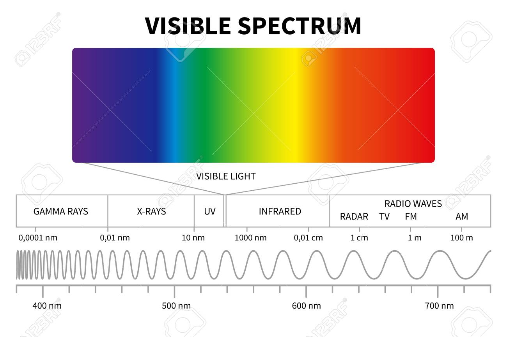
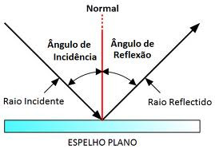
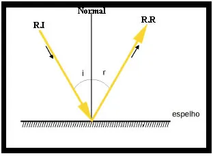

A cor não é uma característica própria do objeto, mas depende da luz que o ilumina. Isso porque cada tipo de radiação possui uma frequência característica.

Quando ocorre a incidência da luz em uma superfície e ela retorna ao meio do qual ela estava se propagando, dizemos que ocorreu o fenômeno óptico reflexão. Seja um espelho (s) plano em que é feita a incidência de um raio de luz RI que forma um ângulo i com a normal do espelho; o raio refletido RR formará um ângulo r com a normal do espelho

As lentes esféricas podem ser do tipo convergente, que focalizam a luz incidente em um ponto único, ou divergente, que espalham os raios de luz incidentes. Cada tipo de lente forma imagens específicas, que são utilizadas para diversas finalidades, como na correção de problemas de visão, no zoom de máquinas fotográficas e câmeras de vídeo, na composição de microscópios etc.
Os elementos que compõem as lentes esféricas são:
